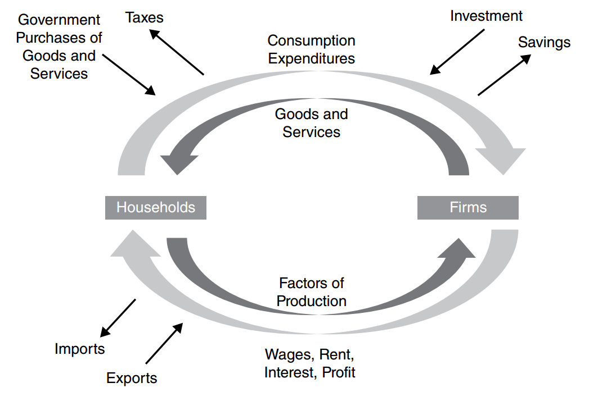

What is
Macroeconomics?
One economy · millions of markets · a whole new view
Last year: AP Microeconomics
You have already built a full toolbox. Tick what you remember:
Unit 1 · Basic Economic Concepts
Scarcity · PPC · Comparative advantage · S&D
Unit 2 · Supply & Demand
Elasticity · Social welfare · CS & PS
Unit 3 · Production, Cost &
Perfect Competition
Production · Costs · Profit max
Unit 4 · Imperfect Competition
Monopoly · Oligopoly · Monopolistic competition
Unit 5 · Factor Markets
Labor market · Derived demand · Wages
Unit 6 · Market Failure &
the Role of Government
Externalities · Public goods
Every tool carries over — macro changes the lens, not the logic.
What about the whole economy at once?
Trees vs. forest
Microeconomics 🌲
Individual markets, households, firms
· Why did coffee prices rise?
· How many workers to hire?
Macroeconomics 🌲🌲🌲
The economy as a whole
· Why is there a recession?
· Why are prices rising?
· Why can't everyone find a job?

Six units, one story
Click any unit to see what it covers:
This map mirrors your micro year
Stage 1 · U1–U3
Ideal theory
Build the clean core first: S&D foundations → three indicators → AD-AS.
Same as micro U1–U3: the ideal case before reality enters.
Stage 2 · U4
A special sector
Zoom into one special market — the financial sector: money, banks, interest rates.
Macro U4 ≈ micro U5 (factor markets): one sector, studied closely.
Stage 3 · U5–U6
Let reality in
Add government intervention and the international market — more players, more movement.
Macro U5 & U6 ≈ micro U4 & U6.
What the test looks like
Principles
Define & use concepts
Interpretation
Explain data & events
Manipulation
Predict the impact of changes
Graphing
Draw & shift AD-AS, money market, Phillips curve
What will feel different this year?
Six habits for AP Macro
The ground rules for this year
You heard these last year — we start the new year by restating them.
Meet the new terms
Today in five blanks
① Macroeconomics studies the economy as a whole.
② Three indicators: GDP, unemployment, and inflation.
③ Macro has more specialized vocabulary than micro.
④ Macro theories are more controversial — they depend on the system.
⑤ Unit 1 reviews micro foundations: scarcity, PPC, comparative advantage, and supply and demand.
Thank you!
Scan to Take the AP Vocabulary Quiz
AP Vocabulary Test · 英汉词汇测试
xyjiapku.github.io/economics_mini_lab